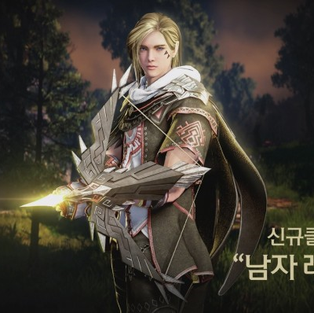

เป็นตัวละครโจมตีระยะไกล มีความพริ้วไหวสูง ดาเมทสูง แต่พลังป้องกันต่ำ

เป็นตัวละครโจมตีระยะประชิด มีพลังป้องกันและพลังชีวิตที่สูงมาก แต่ความคล่องตัวต่ำ
| Archer | |
|---|---|
|  | Archer เป็นตัวละครโจมตีระยะไกล มีความพริ้วไหวสูง ดาเมทสูง แต่พลังป้องกันต่ำ |
| Warior | |
|
Warior เป็นตัวละครโจมตีระยะประชิด มีพลังป้องกันและพลังชีวิตที่สูงมาก แต่ความคล่องตัวต่ำ |